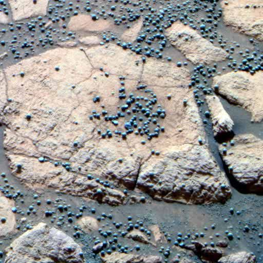

Overview
Opportunity, also known as MER-B (Mars Exploration Rover - B), was a
robotic rover that was part of
NASA's Mars
Exploration Rover program. It landed on Mars on January 25, 2004,
three weeks after its twin, Spirit (MER-A), touched down on the
opposite side of the planet.
Opportunity's primary mission
was to search for and characterize a wide range of rocks and soils
that hold clues to past water activity on Mars. The rover exceeded its
planned 90-day mission duration by far, continuing its exploration and
scientific discoveries for nearly 15 years until communication was
lost on June 10, 2018.
Opportunity made groundbreaking
discoveries about the Red Planet's geology and environment, including
evidence that Mars once had conditions that could have supported
microbial life.
Key Facts
- Launch Date: July 7,2003
- Landing Date: January 25, 2004
- Mission Duration: Originally planned for 90 sols (Martian days), extended to nearly 15 Earth years
- End of Mission: June 10, 2018, after loss of communication due to a dust storm
- Travel Distance: Over 45 kilometers (28 miles)
- Major Discoveries: Evidence of ancient water flows and environments that could have supported microbial life
- Location: Meridiani Planum, Mars
Discoveries

Blueberries on Mars
The rover discovered small spherical objects, nicknamed "blueberries," which are hematite-rich spherules. These provided strong evidence that liquid water once flowed on the surface of Mars, as they are believed to have formed in wet ground conditions.

Heat Shield Rock
Discovered in January 2005, this was the first meteorite ever identified on another planet. Officially named "Meridiani Planum," it is an iron meteorite about the size of a basketball. The discovery was significant because it provided direct evidence of meteoritic material on Mars, offering clues about the history of meteorite impacts on the planet and the composition of materials in the solar system.

Sulfate-rich Sandstones
Opportunity discovered sulfate-rich sandstones at various locations, including the Meridiani Planum. These sandstones were indicative of the presence of acidic water in the past. Sulfates form in liquid water environments, and their abundance suggested that Mars had long-standing, possibly stationary, bodies of water such as lakes or shallow seas that were acidic.
Opportunity Rover Mission Timeline
- July 7: Launch
2003